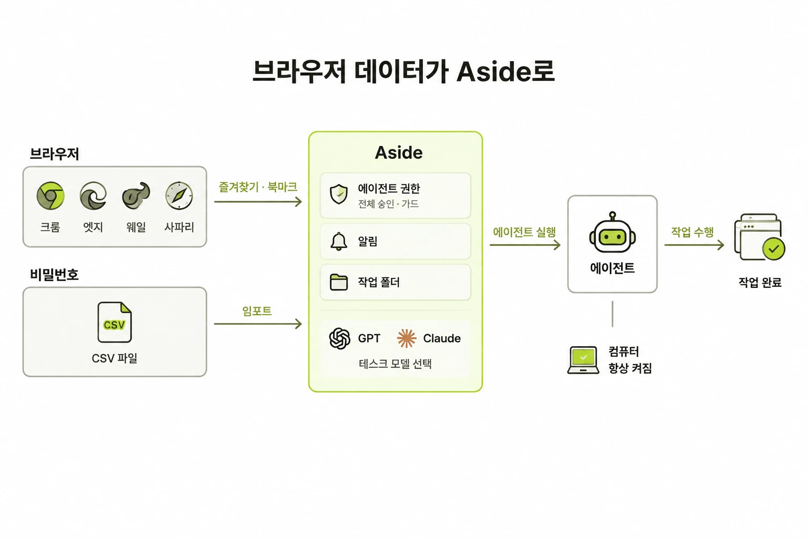

Aside · ego(lite) · Pickle Browser의 정체, 만든 곳, 가격, 차이
커뮤니티 · SNS · 우리 기수 크루가 직접 돌린 워크플로우
개념, 비유, 그리고 세 도구가 CLI를 대하는 서로 다른 방식
한 줄 결론 — 셋 다 "AI에게 로그인된 손을 달아 주는 브라우저"예요. 차이는 누가 운전하고, 사람이 어디까지 보느냐에 있어요.
챗봇은 공개된 웹만 읽어요. 진짜 일은 로그인 뒤에 있어요 — 내 블로그 통계, 사내 대시보드, 장바구니, 메일함.
AI 브라우저는 내가 이미 로그인해 둔 상태를 AI가 이어 쓰게 해서 이 벽을 넘어요.
검색, 요약, 공개 문서 정리
새 브라우저를 띄우면 로그인이 안 돼 있어요. 비밀번호를 AI에 줄 수도 없어요
중요한 행동(결제 · 전송 · 삭제)은 사람 승인을 받아요
| Aside | ego(lite) | Pickle Browser | |
|---|---|---|---|
| 한 줄 정의 | 내 로그인으로 대신 일해 주는 AI 브라우저 | 내 브라우저 안에 에이전트 전용 작업공간을 빌려줌 | 에이전트가 조종하고 나는 지켜보는 로컬 브라우저 |
| 만든 곳 | Aside (YC 2025 가을, 한국인 공동창업자 3명) | citrolabs (스킬 · 문서는 MIT 오픈소스) | Nu Terra Labs (Product Hunt 런치, 초기 빌드) |
| 운전하는 AI | 자체 에이전트 + 외부 에이전트(CLI · MCP) | 내가 쓰는 에이전트 (Claude Code · Codex 등) | 내가 쓰는 에이전트(MCP) 또는 내장 로컬 모델 |
| 무기 | Vault(비밀번호 격리) · 메모리 · 루틴 · 채널 | Space(병렬 작업공간) · JS 코드로 한 번에 조작 | 보이는 창 · 승인 게이트 · 토큰 압축 · 재생 |
| 가격 | 무료 500크레딧/월 · Pro $20 · Max $200 | 무료 | 무료 (호스팅 모델 · API 키는 각자 비용) |
| OS | macOS · Windows | macOS · Windows(베타) | macOS · Windows · Linux |
API 연동을 깔지 않아요. 내가 로그인해 둔 사이트를 사람처럼 직접 써서 메일 · 대시보드 · 사내 툴 일을 끝내요.
무료 플랜도 내 Claude 구독 등을 연결해 쓸 수 있어요 (Bring your own subscription)
"에이전트를 위한 비밀번호 관리자". AI는 비밀번호를 못 보고, 자동 입력으로 로그인만 시켜요.
방문 기록이 내 컴퓨터의 마크다운 파일로 쌓여요. 직접 열어 고칠 수 있어요.
정해진 시간에 반복 실행(루틴), Slack · Telegram에서 원격 지시(채널, Pro부터).
aside 명령어로 Claude Code · Codex에 붙어요. 크루들이 쓰는 방식이 이거예요.
① 옮기기
크롬 · 엣지 · 웨일 · 사파리의 즐겨찾기, 비밀번호 CSV를 가져와요
② 정하기
에이전트 권한(전체 승인 · 가드), 알림, 작업 폴더, 쓸 모델(GPT · Claude)
③ 맡기기
에이전트가 실행해 작업을 끝내요. 루틴은 컴퓨터가 켜져 있어야 돌아요

내가 앞에서 브라우저를 쓰는 동안, 에이전트는 Space라는 별도 공간에서 일해요. 마우스도 탭도 안 건드려요.
명령어를 하나씩 주고받는 대신, AI가 클릭 · 입력 · 대기를 자바스크립트 한 덩어리로 묶어 한 번에 실행해요. 브라우저에 Node.js를 넣어(약 10MB) 가능해졌고, 자체 측정으로 20~50% 빠르다고 해요.
Claude Code가
잠재 고객 10명 정보 보강
Codex가
경쟁사 5곳 동시 수집
heyuan110 리뷰 · M5 MacBook Pro · Claude Code 2.1.268 · "Hacker News 톱5 제목 뽑기" 과제
"대부분의 에이전트 브라우저는 안 보이는 곳에서 돌아간다"의 반대. 내 컴퓨터의 보이는 창에서 일하고, 언제든 내가 핸들을 뺏을 수 있어요.
내장 로컬 모델(약 1GB, 오프라인 · $0) · 무료 호스팅(Ollama Cloud · NVIDIA) · 내 구독(Claude · GPT · Gemini 키 또는 MCP)
에이전트 성격과 규칙을 마크다운 한 장에. 리서치 · 가격비교 · 폼 입력 스킬 기본 제공. 목표를 쪼개 출처 달린 리포트로.
실행을 스크린샷 단위로 다시 보기. 구매 · 전송 · 되돌릴 수 없는 행동은 항상 먼저 물어요.
페이스북 그룹 · 레딧 글을 읽기 전용 규칙(AGENTS.md)으로 모으고, 소스마다 git 커밋. 인터뷰 후보 168명 확보.
Aside로 사례 104편 수집 · 9유형 분류 → 내 업무에 맞는 과제 추천 → 공장 성과관리 엑셀을 매월 1일 자동 생성.
로그인된 탭에서 네이버 블로그 조회수 · 유입 검색어 · 링크 클릭을 읽어 주간 리포트와 "이번 주 할 일 3줄"로. 네이버 블로그는 Aside에서만 열렸어요.
HN 톱5 · GitHub 로그인 확인 · 파이썬 문서 검색 3과제를 다른 브라우저 도구 2개와 비교. 로그인 확인은 프로필 지정이 필요했어요.
책 증정 이벤트 당첨자 10명에게 Yes24로 책을 보내야 했어요. 주소는 구글 설문으로 받아 둔 상태.
구매하기 → 주소 검색해서 입력 → 휴대폰 번호 → 주문서 작성
한 명씩, 10번
"결제는 내가 할 테니
그 전까지 계속 진행해 줘"
배울 점 — 결제까지 맡길 수도 있지만 아직 완전히 믿지는 않아서 비밀번호는 직접 넣었어요. "어디까지 맡길지"를 사람이 정하는 게 핵심이에요.
판단은 Claude Code, 로그인된 클릭은 AI 브라우저
수집 · 측정으로 신뢰를 쌓고 나서 쓰기 · 발행으로
루틴 · launchd로 매주 · 매월 자동 실행
120초 제한 → 30일씩 3번. 소스마다 커밋
결제 · 발행 · 전송은 승인 게이트
공통으로 부딪힌 곳 — 화면에서 글자가 안 뽑힐 때(레딧 → .json 주소로 우회), 긴 작업이 끊길 때(세션 이어 붙이기), 현장 용어는 AI가 추측 못 함(사람이 알려 줘야 함).
Command Line Interface. 아이콘을 클릭하는 GUI의 반대편이에요. 터미널(맥) · PowerShell(윈도우)이 그 창이고, Claude Code도 CLI 프로그램이에요.
쉽고 눈에 보여요. 대신 메뉴에 없는 조합은 주문할 수 없고, 매번 내가 눌러야 해요.
설정 → 계정 → 로그인 버튼 클릭
"계란 2개, 스크램블, 소금 적게." 자유롭고 빠르고, 한 번 적어 두면 그대로 반복돼요.
aside login --email "내 이메일"
화면 픽셀을 보고 클릭하는 것보다 명령 한 줄이 훨씬 정확해요
스크립트 · 스케줄(cron) · 원격 실행에 그대로 붙어요
결과가 글자라 AI가 읽는 양(토큰)이 적어요
뭘 칠 수 있는지 안 보이고, 삭제 명령은 바로 실행돼요
그래서 이제는 사람이 CLI를 외우지 않아도 돼요. 사람은 말로 시키고, Claude Code 같은 에이전트가 대신 명령을 쳐요. 예를 들어 claude mcp add aside -- aside mcp 한 줄이면 "Claude Code에 Aside를 도구로 붙여라"가 끝나요.
aside "할 일" · aside exec · aside repl · aside mcp 같은 CLI를 따로 줘요./ego-browser 한 줄이지만, 속은 자바스크립트 함수예요. 명령을 여러 번 주고받지 않고 코드 한 덩어리로 끝내요."command": "pickle-mcp" 한 줄로 연결하면 끝. 그다음부터는 대화로 시키고, 화면으로 지켜봐요.